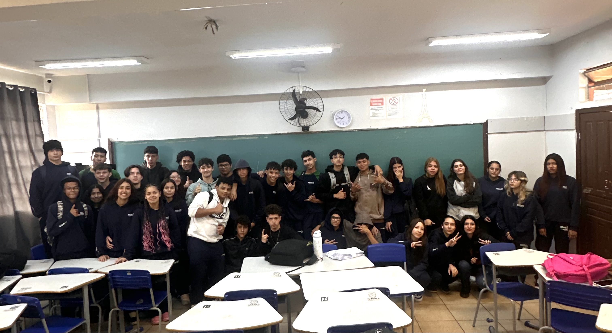

Neste trimestre, nossa turma embarcou em um desafio: criar uma página na web utilizando a linguagem HTML! 💻🌐
E o site que vocês estão acessando agora é o resultado de todo esse trabalho e aprendizado construído ao longo do trimestre.
Aqui, vocês poderão conhecer e explorar tudo o que foi desenvolvido nas aulas de Robótica, Programação, Física e Tecnociência. 🤖💡⚙️
Mais do que três disciplinas, esses componentes trabalharam juntos e de forma integrada, unindo criatividade, tecnologia, ciência e programação para transformar ideias em um projeto real.
Este site representa o resultado da nossa jornada: aprender, criar, experimentar e transformar conhecimento em tecnologia! 🚀
Neste tópico, vamos compartilhar fotos, experiências e curiosidades que descobrimos ao longo das aulas de Robótica neste trimestre! 🚀
Durante esse período, colocamos a mão na massa e transformamos conceitos em protótipos funcionais, explorando na prática como a tecnologia, a eletrônica e a programação podem trabalhar juntas. Entre os projetos desenvolvidos, estão:
Cada protótipo foi uma oportunidade para experimentar, testar, corrigir erros e aprender na prática. Afinal, na Robótica, errar também faz parte do processo de criar! 🤖⚙️✨ Confira abaixo alguns registros dessa jornada! 📸
Neste trimestre, a turma do 2º ano mergulhou no fascinante universo da óptica, sempre com os pés fincados no método científico! Começamos investigando como a divulgação científica comunica descobertas ao mundo e exploramos os limites da nossa própria visão entendendo o que enxergamos e por quê.
A partir daí, a luz virou protagonista: estudamos suas propriedades, como ela se comporta ao encontrar espelhos e como se curva ao atravessar diferentes meios no fenômeno da refração. Essa jornada nos levou até a fibra óptica, tecnologia que conecta o mundo digital, e à decomposição da luz em cores.
Na sequência, os estudantes aprofundaram-se no estudo das lentes, seus elementos, aplicações práticas e como formam imagens — para finalmente compreender a óptica do olho humano em detalhes, unindo física, biologia e acessibilidade.
Como fechamento, a turma organizou e estruturou as atividades para o produto final do projeto, aplicando tudo o que foi investigado ao longo do trimestre para propor soluções tecnológicas com impacto real na vida cotidiana.
Um trimestre de muita observação, experimentação e curiosidade científica! 👁️✨
Neste trimestre, nossas aulas de Programação foram dedicadas ao aprendizado da linguagem HTML, e tivemos um grande desafio: colocar em prática tudo o que aprendemos para desenvolver este site! 🌐💻
Ao longo das aulas, exploramos os principais conceitos do HTML, entendendo como funcionam as tags, elementos, atributos e a estrutura de uma página web. Mais do que aprender códigos, descobrimos como uma ideia pode se transformar, passo a passo, em uma página acessível e interativa.
Criar este site não foi uma tarefa fácil! Foram muitos testes, descobertas, erros, correções e, principalmente, muito aprendizado. 🚀
Nosso objetivo foi compartilhar o máximo possível do que aprendemos durante o trimestre e mostrar um pouco de tudo aquilo que conseguimos construir juntos.
Esperamos que vocês tenham gostado de conhecer o nosso projeto e que, ao navegar por estas páginas, possam perceber um pouco do esforço, da criatividade e do conhecimento que colocamos em cada parte deste trabalho! ❤️💻
Sejam bem-vindos ao resultado da nossa jornada pelo mundo da programação! 🚀